1. Experiment Progression, Card Pick Rates & Relic Telemetry
Interactive charts compiled from all 21 Slay the Spire .run telemetry files and bot logs.
Floor Reached & Playtime (Seconds) Across All 21 Runs (v1.0 → v2.3)
Bars show the highest floor reached in each run (Floor 16 = Act 1 Boss, Floor 33 = Act 2 Boss, Floor 50 = Act 3 Boss, Floor 51 = Victory!). The gold line tracks run duration in seconds.
Ironclad Card Pick Rate (%) vs. Times Offered (Top 22 Cards)
Comparison of reward pick rate (%) and offer frequency. Core scaling/exhaust engines (Feel No Pain 100%, Shockwave 76.5%, Hemokinesis 70.6%, Heavy Blade 64.5%) anchor the bot's draft priority.
Most Frequently Obtained Relics Across 21 Runs
Distribution of relics acquired via Neow, Elites, Chests, Events, Shops, and Boss chests.
Winning Run (#21) Floor-by-Floor HP, Max HP & Gold Trajectory (Floors 1–50)
Notice how Forgotten Altar (+5 Max HP) and Feed (+8 Max HP) scaled Max HP from 80 to 93, while Snecko Eye + Corruption + Feel No Pain kept HP near 100% throughout Act 3.
Deadliest Encounters: Average Damage Taken per Fight
Aggregated across 354 combat encounters. Bosses (Time Eater, The Guardian, Awakened One) and Elites (Lagavulin, Book of Stabbing, Nemesis) drove key AI iterations.
2. Autonomous Ironclad Strategy Architecture
How the in-process Java agent (StsObserverAgent) and Python heuristic planner (play_ironclad.py) make decisions.
1. Dynamic Deck Valuation & Archetype Synergy
Every card reward and shop screen is scored dynamically against the current Master Deck and Relic bar:
- Exhaust & Block Engine: High base priority on
Corruption(88),Feel No Pain(87, 100% pick rate),Shockwave(88),Shrug It Off(79), andSecond Wind. - Strength Multipliers: When
Demon Form,Inflame,Spot Weakness, orLimit Breakis present, multi-hit attacks (Twin Strike,Pummel,Sword Boomerang,Heavy Blade) receive a+15synergy bonus. - Anti-Bloat Soft Cap: Penalizes duplicate attacks and skips sub-threshold cards once deck size exceeds 22–28 cards.
2. Combat Turn Sequencing & Lethal Post-Scoring
Each combat step evaluates all playable cards in hand using a 5-stage priority pipeline:
- Stage 1 (0-Cost Setup & Draw):
Apotheosis(400),Offering(320),Armaments(260),Battle Trance(250). - Stage 2 (Powers & Scaling):
Corruption(+75 withSnecko Eye),Feel No Pain,Demon Form,Inflame,Spot Weakness. - Stage 3 (Debuffs Before Attacks): Applies
Vulnerable/Weak/-Str(Shockwave,Disarm,Uppercut,Bash,Thunderclap) before firing heavy attacks. - Stage 4 & 5 (Urgency-Weighted Block vs. Lethal Attacks): Elevates Block skill urgency when
unblocked_dmg >= 12or in Boss rooms, while applying a universal+360lethal kill bonus (+250 extra for fatalFeed).
3. Boss & Elite Specific Counter-Heuristics
Each loss in Runs #1–#20 produced targeted encounter rules:
- Time Eater (Floor 50): Never wastes attacks/debuffs into
Haste(BUFFintent at <228 HP); stops playing non-Powers at6..8onTime Warpwhen block is full, and pushes through9..11to reset the counter to0/12. - Awakened One (Floor 50): Suppresses minor Powers during Phase 1 so
Curiositydoes not buff enemy Strength. - Nemesis & Spiker (Act 3): Caps expected attack damage to
1per hit againstIntangibleenemies and blocks multi-hit suicide intoThorns. - Slime Boss & Lagavulin (Act 1): Prioritizes Powers/setup before waking sleeping
Lagavulin, and adds+250priority to splitSlime Bossat<= 70 HP.
3. Iterative Engineering Changelog (v1.0 → v2.3)
What changed after each run, why previous iterations lost or got stuck, and how each fix improved floor progression.
4. Google Sheets & CSV Telemetry Explorer
Browse all 6 datasets below, sort by any column, download the .xlsx workbook, or click Copy Tab for Google Sheets and press Ctrl+V directly in Google Sheets.
5. Live 1080p OpenGL Framebuffer Captures (Winning Run #21)
Captured directly from the LibGDX OpenGL framebuffer via StsObserverAgent during the winning 13m 21s run.
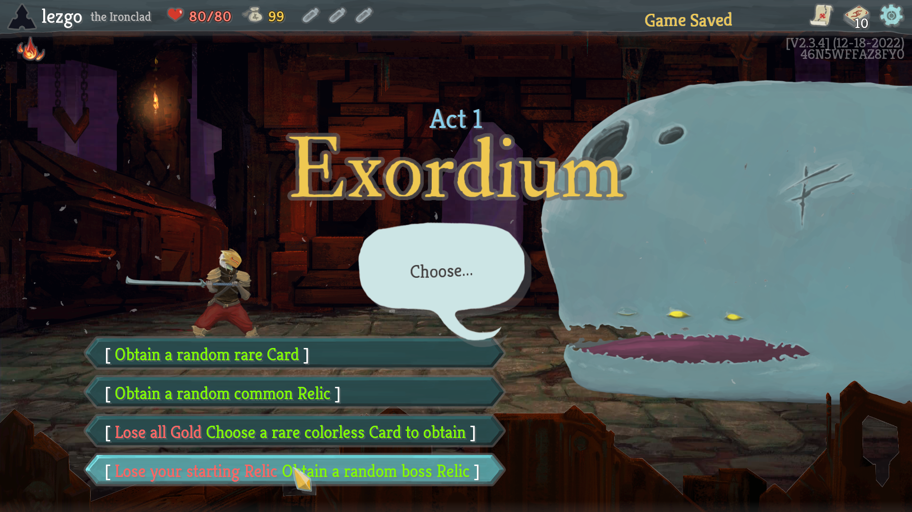
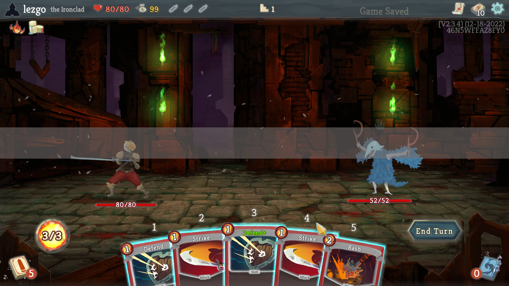
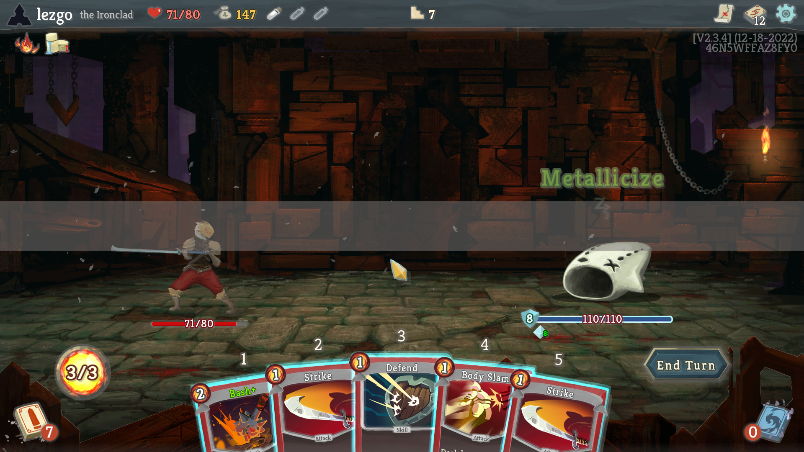
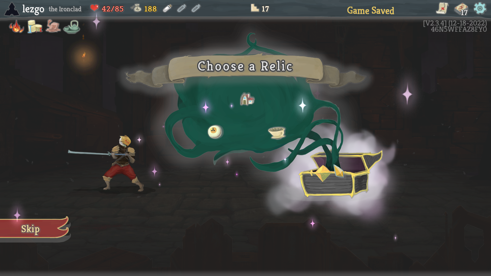
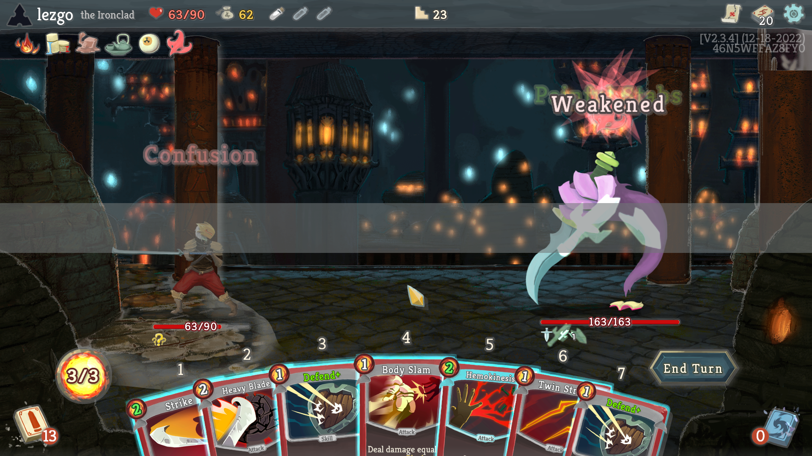
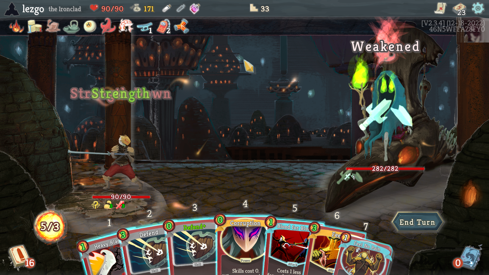
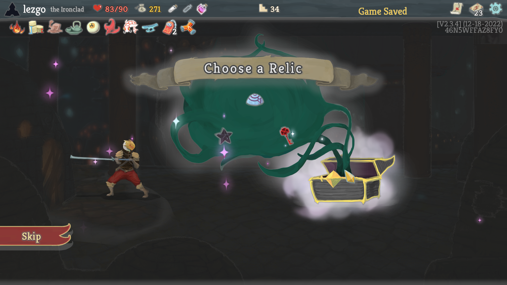
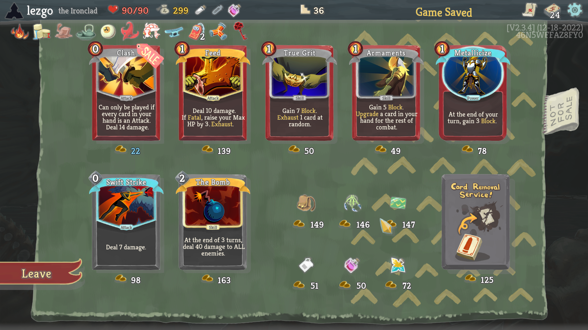
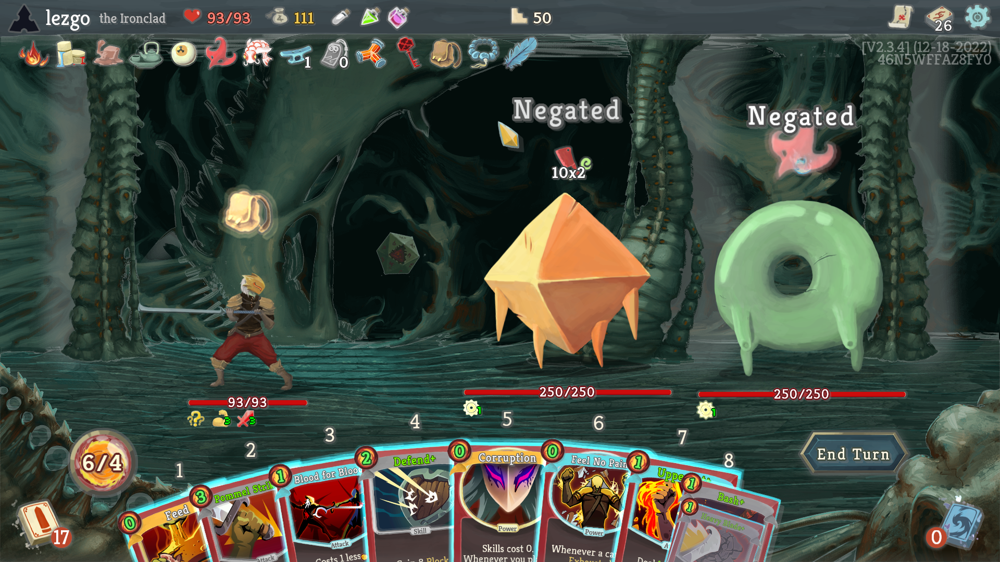
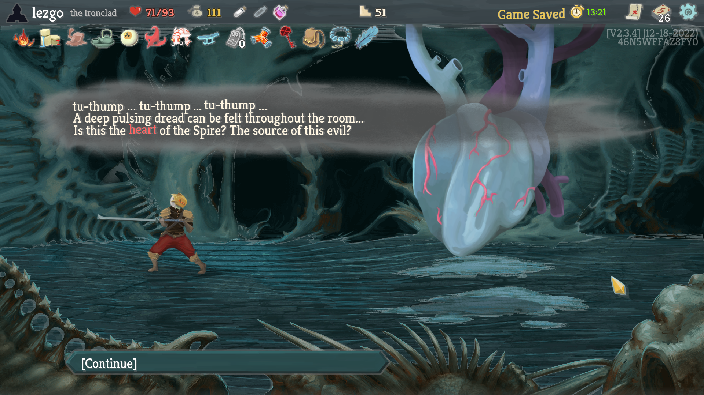
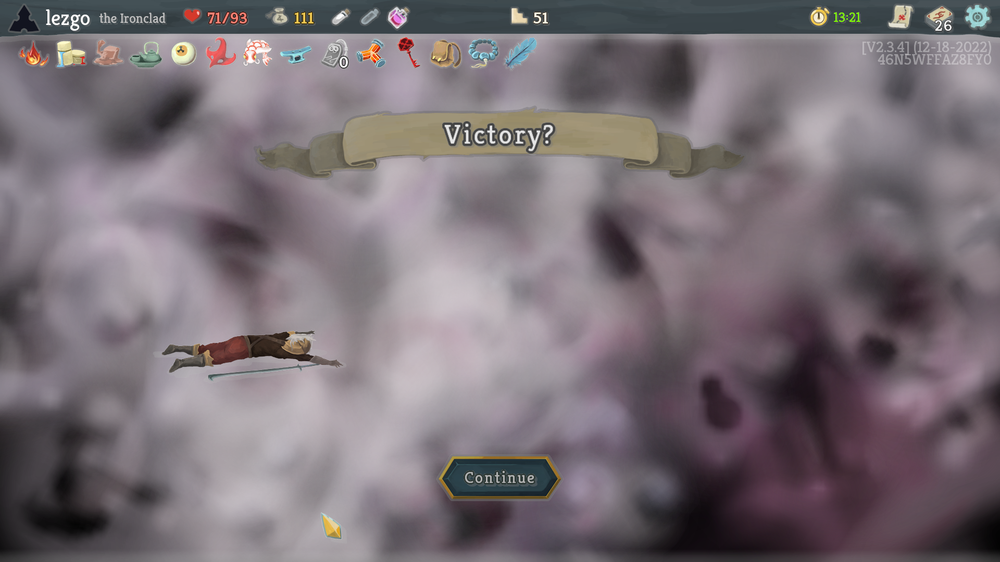
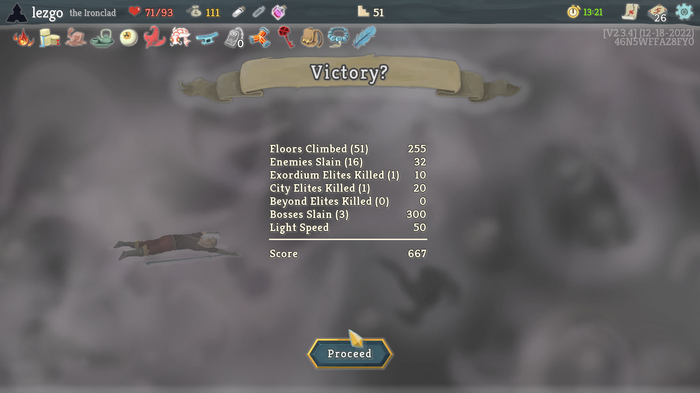
6. How the Bot Was Built — Installation, Source Usage & Custom Training Guide
Complete guide to our zero-mod JVM instrumentation method, running the bot on your PC, editing heuristics, or training your own RL/LLM agent.
A. Method Used to Build the Bot (Zero-Mod JVM Agent)
Instead of fragile OCR/screen-scraping or requiring third-party mod loaders (ModTheSpire / BaseMod), we built a two-layer architecture that attaches directly to unmodified Steam Slay the Spire:
- Layer 1 — In-Process Java Agent (
observer/StsObserverAgent.java): Attached via-javaagent:observer/sts_observer.jar. Starts an embedded HTTP server on127.0.0.1:17575inside the game JVM. - Thread-Safe LibGDX Dispatch: Reads exact game memory (HP, energy, monster intents, powers, hand cards, hitboxes) on
/stateand executes all UI/card actions insideGdx.app.postRunnable(...)on/actionso actions run deterministically on the OpenGL render thread. - Layer 2 — Iterative Python Planner (
play_ironclad.py): Evolved across 21 runs (v1.0→v2.3) by analyzing every loss log and encoding targeted counter-rules (Slime Boss split, Awakened One Curiosity, Nemesis Intangible, Time Eater Time Warp/Haste).
B. How to Install & Run the Bot (3 Steps)
Requires Steam Slay the Spire (which already bundles its own Java runtime in jre\bin\java.exe) and Python 3.8+ (standard library only, no pip install needed!):
# 1. Clone the repository
git clone https://github.com/yakiebi/slay-the-spire-ironclad-ai.git
cd slay-the-spire-ironclad-ai
# 2. Launch Slay the Spire with the Java Agent attached
.\launch_sts_with_agent.bat
# 3. In a second terminal, run the Ironclad AI bot
python play_ironclad.pyIf your Steam library is on another drive, set $env:STS_DIR="D:\SteamLibrary\steamapps\common\SlayTheSpire" before running .\launch_sts_with_agent.bat.
C. How to Edit Heuristics or Play Differently
All decision logic lives in clean, self-contained functions inside play_ironclad.py:
- Card Draft & Shop Tier List (
CARD_SCORES&evaluate_card_for_deck): Edit base scores (0–100) or add synergy bonuses for archetypes like Barricade + Entrench + Body Slam or Rupture + Brutality. - Combat Card Sequencing (
handle_combat): Modify the 5-stage combat scorer (0-cost setup → Powers → Debuffs → Urgency-weighted Block → Lethal/Attack post-scoring). - Map Routing (
handle_map): Adjust the 3-floor lookahead weights for Elites (E), Campfires (R), Shops ($), and Events (?), or enablehasEmeraldKeypathing for Act 4 Heart runs. - Rebuilding the Java Agent: If you edit
observer/StsObserverAgent.java, run.\build_observer_jar.batto recompilests_observer.jar.
D. Training Your Own RL / Imitation Learning / LLM Agent via HTTP API (http://127.0.0.1:17575)
Because StsObserverAgent exposes a language-agnostic JSON API, you can connect PyTorch / Gymnasium RL agents, MCTS planners, or LLM agents in any language:
| HTTP Endpoint | Description |
|---|---|
GET /state |
Returns full JSON state: mode, dungeon (floor, act, screen), room, player (HP, block, energy, hand, masterDeck, relics, potions, powers), monsters (HP, block, intent, intentDmg, powers), and UI hitboxes. |
GET /action?cmd=play_card&index=0&target=0 |
Queues hand card index onto GameActionManager.cardQueue targeting monster target (or -1 for self/AoE). |
GET /action?cmd=end_turn |
Triggers endTurnButton.disable(true) to end the player's combat turn cleanly. |
GET /action?cmd=click&x=960&y=540 |
Moves cursor to (x, y) in 1920×1080 space and performs a left-click on the LibGDX thread. |
GET /action?cmd=hand_select&index=0 |
Selects a card in HandCardSelectScreen (Armaments, True Grit, Dual Wield, Gambling Chip). |
GET /screenshot?path=C:/path/frame.png |
Saves a 1920×1080 PNG screenshot directly from the OpenGL framebuffer. |
# Minimal Custom Python RL / Bot Loop Example
import urllib.request, json, time
def get_state():
return json.loads(urllib.request.urlopen("http://127.0.0.1:17575/state").read())
def send_action(query):
return json.loads(urllib.request.urlopen(f"http://127.0.0.1:17575/action?{query}").read())
# After running your own experiments, regenerate all CSVs, .xlsx, and dashboard charts:
# python generate_experiment_assets.py